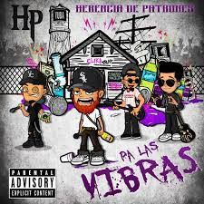

los Corridos Tumbados

Jay Dee
Las letras de HERENCIA DE PATRONES cuentan historias de la vida diaria, de lo que pasa en las calles, fiestas en exceso, sexualidad, tráfico de drogas y violencia.
A pesar de que su música habla de la marihuana, quieren inspirar a los jóvenes para que formen su propio movimiento, se hagan líderes y lleguen lejos en lo que les gusta hacer.
Su popularidad creció en Estados Unidos gracias a las peticiones de los jóvenes en las estaciones de radio Regionales Mexicanas que se encuentran en el país americano, esto de acuerdo a la investigación realizada por SAPS Grupero, La Revista Digital para la elaboración de esta biografía.
Sus videoclips consiguen millones de visitas desde todos los lugares del mundo, en las redes sociales cada día son más los fans que se se suman.